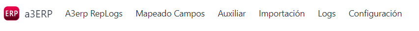
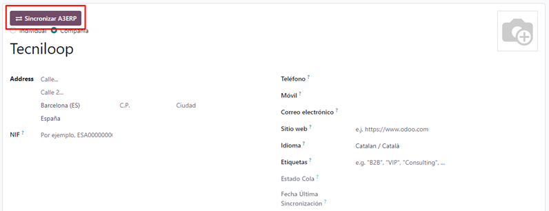
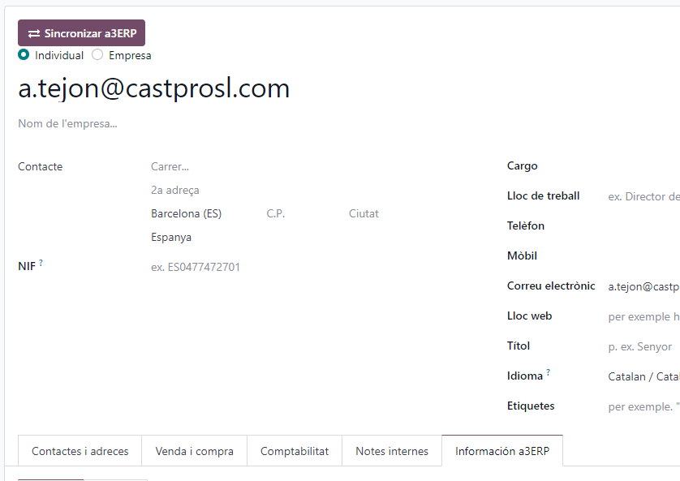
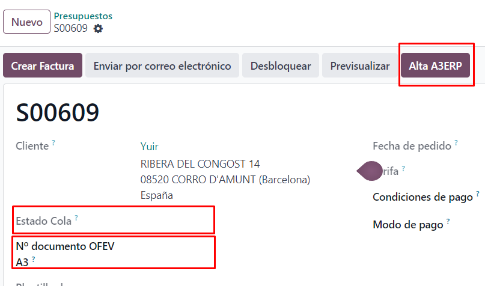
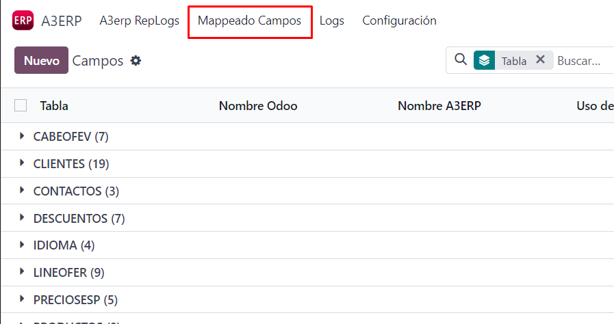
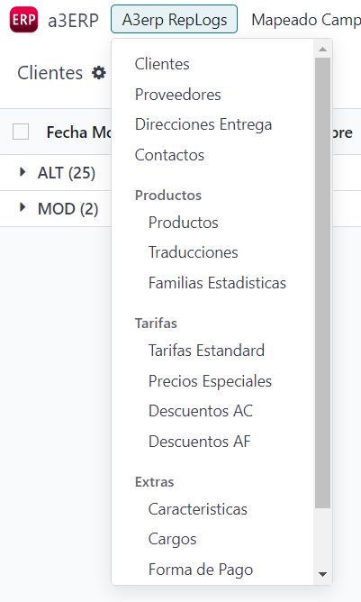

Para empezar, debemos configurar los campos necesarios, como la URL del Web Service, usuario, contraseña e ID de la empresa de a3ERP. Una vez configurados, podremos iniciar sesión, obteniendo un token temporal de 2 horas.

En la pantalla principal encontraremos el icono de a3ERP para acceder a las funciones básicas de la API. Las opciones disponibles incluyen:

Al crear un cliente en Odoo, es posible enviarlo a a3ERP si no tiene un código asociado. Un botón nos permite agregar el cliente a la cola de creación de a3ERP. El estado de la petición se guarda en el campo "Estado Cola".

Los contactos en Odoo pueden transferirse a a3ERP si pertenecen a una empresa. Hay tres maneras de hacerlo:

Los pedidos confirmados y sin un número de OFEV pueden enviarse a a3ERP. Si el cliente no existe en a3ERP, se debe crear primero. Una vez que se genera el pedido, devuelve un número de documento.

El mapeo de campos entre Odoo y a3ERP permite una traducción entre ambos sistemas. Algunos campos importantes:

Esta sección almacena los registros modificados, creados o borrados en a3ERP. Los registros se clasifican en colores para indicar el estado de procesamiento:
